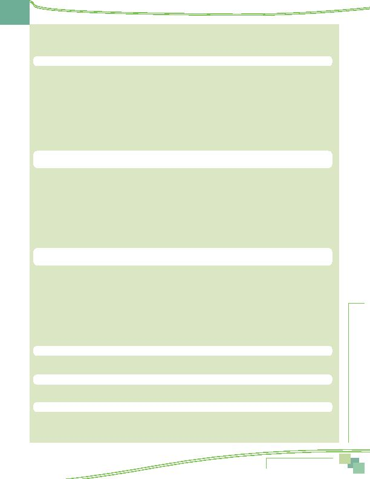

MWCOG-Comm
uter Conn
ecti
on
s-- 2010 State o
f th
e Comm
ute Report
7 3
Comparison of Key SOC Results
CURRENT TRAVEL INFORMATION (continued)
2010 2007 2004 2001
n
Reasons for using alt modes
regional commuters who currently use alternative modes
Changed jobs
15%
18%
16%
5%
Save
money
18% 18% 14% 21%
Save
time
10% 13% 18% 20%
Always
used
0% 11% 7% 2%
No parking/parking expense
4%
9%
3%
4%
No vehicle available
10%
8%
11%
19%
Moved
residence
7% 8% 9% 3%
Avoid
congestion 4% 5% 7% 8%
Convenient/close to work
8%
4%
1%
4%
Gas prices too high
0%
4%
0%
0%
Tired of driving
5%
4%
6%
8%
n
Switching among modes
Modes used previously by commuters who use alternative modes now.
Not all shifts to alt modes are from drive alone. Some shifting occurs from one alt mode to another
Not in Washington area then
10%
15%
17%
Always used this mode
5%
23%
12%
Made a change from another mode
85%
62%
71%
Previous modes used (respondents who shifted from another mode)
Drive alone
53%
55%
56%
Train
23%
20%
12%
Bus
14%
15%
15%
Carpool/Vanpool
4%
10%
10%
Bike/walk
6%
6%
8%
CWS/Telecommute
1%
6%
4%
n
Used or tried other alternative modes
Respondents used or tried an alt mode they are not using now within the past
two years (all regional commuters)
Yes
22% 14% 22% 24%
Other Alternatives Tried
Carpool/casual
carpool
3% 11% 14% 14%
Vanpool
0%
0%
1%
<1%
Bus
7% 32% 32% 33%
Metrorail
13% 45% 11% 13%
Commuter Rail
1%
7%
1%
Bike/walk
4%
15%
13%
9%
TELECOMMUTE
n
Telecommute incidence in region
all commuters (workers who are not self-employed and working only at home)
% regional workers who telecommute 25.0%
18.7%
12.8%
11.3%
Home-based
telecommuters
97% 95% 95% 98%
n
Employer telework programs
all regional commuters + FT teleworkers
Employers with formal program
29%
19%
15%
N/A
Employers with informal TC
25%
22%
20%
N/A
n
Potential for additional regional telecommuting
regional commuters who do not telecommute
Non-TC (percent of commuters)
75%
81%
87%
89%
Job tasks allow TC ("could TC")
40%
30%
25%
31%
Interested in TC ("could and
21%
24%
19%
21%
would TC")
Comparison of Key SOC Results